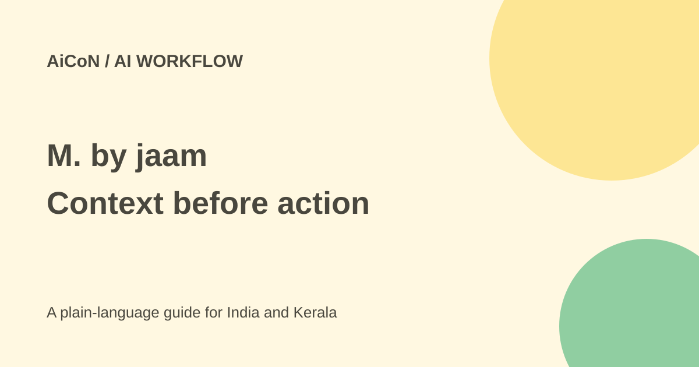

M. by jaam: business context, access and rollout questions
M. by jaam is a business workflow platform. Its goal is to give people and AI agents the background they need to work together, rather than add another stand-alone chatbot.

What is M. by jaam?
jaam calls M. a context engine for agentic work management. In plain language, it maps how a business works: who owns a task, which system holds its data, what rules apply and what should happen next. It then helps organise work across people, existing software and AI agents. An agent is software that can use tools to carry out a task, not merely answer a question.
The platform is built on Microsoft Cloud. The company presents it as a layer over tools a business already uses, not a demand to replace them all. That is a product description, not proof that every application connects without extra work.
Is it free, and can Indian teams use it?
The public page checked here does not establish a free self-service plan or a public subscription price. Access is sales-led. An Indian company should ask jaam for a demo, supported locations, a written price and setup costs. A free demo does not mean a free deployment.
For a Kerala college project, this is better treated as an example of enterprise AI design than a ready-to-use free student tool. A small business may first need clearer responsibilities and records before adding automation.
How to evaluate it
- Choose one small process, such as routing an internal request. Avoid payments or customer promises for the first test.
- Write down its people, source systems, rules, deadlines and approvals.
- Ask which parts M. can read or change and which need a separate connector.
- Use made-up or approved test data. Agree who can approve actions and stop the pilot.
- Compare results with the current process. Check wrong assignments and missed exceptions, not only speed.
- Get the contract, data terms and support plan before connecting real accounts.
Security and price questions
Ask where data is stored, what is retained, which AI providers receive it and how deletion works. Request the scope and dates of any security audit. Microsoft Cloud branding alone does not answer these questions or prove compliance with an Indian regulatory requirement.
A useful quote separates licences, implementation, connectors, model usage and support. Ask what happens when a source system changes or a staff member leaves. Human ownership must remain clear even when an agent joins a workflow.
What changed since the original AiCoN post?
The original post introduced M. and quoted adoption numbers from jaam's launch release. This guide does not use those company figures as independent evidence of effectiveness. Current public material supports the context-engine idea but does not settle public pricing or India rollout terms.
Frequently asked questions
Is M. another ChatGPT app?
Its pitch is business context and coordination across people, systems and agents, rather than general chat alone.
Does it replace Microsoft tools?
jaam says it works over existing technology. Confirm the exact integrations for your deployment.
Can it take over everything?
Do not assume that. Start with a bounded process and human approvals, then expand after testing.
What is the free verdict?
No public free self-service tier was verified. Treat it as an enterprise evaluation requiring a quote.
Sources: Official product · Company launch release. Checked 7 October 2026.